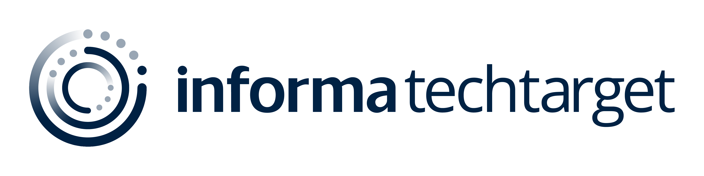

Every outcome here is tied to a specific operating decision — a bet made, a structure built, a system put in place. The numbers are real. The context matters more than the numbers.
What's not here: job titles, responsibility lists, technologies used. If you want a resume, the executive profile page has one. This page is about what the work actually produced.
The situation: TechTarget had a retention problem with only 39% returning second month users. With rich intent data assets, the opportunity was clear. Leverage Gen AI, create a novel solution, empower users.
The work: Led product strategy, design, launch, and optimizations for IntentMail AI — an AI-powered hyperpersonalized sales solution built on TechTarget's proprietary intent data. Defined the monetization model, go-to-market structure, and created the product governance framework necessary to operate responsibly as a NASDAQ-listed company serving Fortune 500 clients.
The outcome: 95% retention increase (39%-76%) and $14M in first-year recurring revenue. The resulting success brought increased acquisition attention and the governance framework proved a valuable asset in the strategic combination of TechTarget and Informa Tech.

AI governance framework · Data productization · Go-to-market structure · Monetization model design
The situation: ConnectWise was scaling fast with $150M+ ARR and a growing MSP customer base. PE scrutiny was intensifying, and the product organization needed to operate at a standard that would hold up under acquisition diligence.
The work: Built the product operating model — strategy cadence, governance structure, roadmap accountability, and cross-functional alignment frameworks — that gave leadership and buyers confidence in how the product org operated, not just what it shipped.
The outcome: The $1.5B PE acquisition went through. The product organization was an asset in the process, not a risk to manage.
[ Additional operational detail, team structure context — placeholder for final copy ]
Product operating model · Governance structure · Roadmap accountability · Acquisition diligence readiness
The situation: ConnectWise's MSP platform had significant market penetration but needed to drive deeper adoption within the existing customer base and expand to adjacent user segments.
The work: Product-led expansion strategy — identifying the platform investments, adoption levers, and go-to-market mechanics that converted single-seat accounts into multi-user deployments and brought new user types onto the platform.
The outcome: User base grew from 70,000 to 130,000 — 86% growth — while maintaining product quality and customer satisfaction metrics.
[ Specific expansion mechanics and retention metrics — placeholder for final copy ]
Product-led expansion · Platform investment prioritization · Adoption and activation design
Additional case study — [ company, problem, outcome ] — to be added. Potential topics: AI governance framework build, team restructure and 40% promotion rate, startup-to-scale product operating model, or post-M&A integration work.
Shipping is easy. Scaling is the work. Most product problems are operating model problems in disguise.
Instrumentation before roadmap. You can't make good prioritization decisions without knowing what's actually happening in the product.
Business outcomes over feature counts. Every roadmap item should be traceable to a revenue, retention, or expansion outcome.
People compound. 40% of my team was promoted in a single year. That's not a HR stat — it's a product strategy outcome.
I studied Sociology. Turns out building SaaS products is mostly just understanding why groups of people do what they do.
That background shows up in how I read organizations, stakeholder dynamics, and the behavioral patterns that make or break adoption. Most product leaders optimize for what to build. I optimize for who has to change behavior for it to succeed — and work backwards from there.